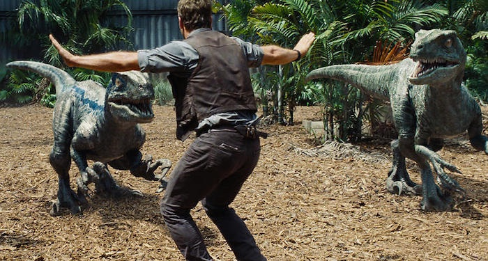

Jurassic World
Plot Synopsis
Brothers Zach and Gray Mitchell visit Jurassic World, a dinosaur theme park on Isla Nublar, of which their aunt Claire Dearing is the operations manager. Claire assigns her assistant Zara as the boys' guide, but they evade her and explore on their own.
Elsewhere on the island, former Navy veteran and ethologist Owen Grady has been training a quartet of Velociraptors composed of Blue, Delta, Echo, and Charlie, and researching their intelligence. Based on the raptors' ability to follow commands, head of InGen security Vic Hoskins believes that the animals can be weaponized, an idea Owen and his assistant Barry vehemently oppose.
Prior to its opening, Claire and park owner Simon Masrani inspect the park's newest attraction, the Indominus rex, a transgenic dinosaur created by geneticist Dr. Henry Wu. Masrani tasks Owen with evaluating the enclosure's security. Owen warns Claire that the Indominus lacks social skills, making it dangerous and unpredictable. When the Indominus has apparently escaped, Owen and two park workers enter the enclosure. The Indominus, which can camouflage itself and mask its heat signature, suddenly appears. Owen survives, but it devours the other two men before escaping into the island's interior.
Realizing that it is highly vicious and intelligent, Owen advises Masrani to have the Indominus destroyed, but to protect his company's investment, Masrani dispatches a specialized unit to subdue it with non-lethal weaponry, so it can safely be returned to its paddock. After most of the unit is slaughtered, Claire orders the evacuation of the island's northern sector, while Masrani ponders Owen's warning and confronts Wu.
While exploring the park in a tour vehicle, Zach and Gray enter a restricted area. The Indominus arrives and destroys the vehicle but the boys narrowly escape. They find the ruins of the original Jurassic Park visitor center, repair an old Jeep Wrangler, and drive back to the park resort.
As Claire and Owen search for the boys, they barely escape the Indominus as well. Masrani and two troopers hunt down the Indominus by helicopter, but it breaks into the park's aviary. The aviary's pterosaurs crash Masrani's helicopter, killing its passengers, before converging onto the resort, and attacking everyone, including Zara who is then devoured by a Mosasaurus. Gray and Zach find Owen and Claire at the resort as armed personnel shoot down the pterosaurs.
Assuming command, Hoskins orders the raptors to be used to track the Indominus, where Owen reluctantly complies and spearheads the assault with the raptors. Upon finding the Indominus, the dinosaurs begin communicating among themselves. Owen realizes that the Indominus has Velociraptor DNA and it takes away Owen's command of the raptors, becoming the pack's new alpha. Troops fire on the Indominus, but it escapes. The raptors kill most of the troops, while Charlie is killed in the chaos. Hoskins evacuates Wu and the dinosaur embryos from the island to protect Wu's research. Owen, Claire, and the boys find Hoskins at the lab securing more embryos, but Delta breaks in and kills him.
Owen re-establishes his bond with the three surviving raptors before the Indominus reappears. They attack the hybrid, but Delta and Echo are killed while Blue is knocked unconscious. Claire releases the Tyrannosaurus rex, the park's veteran attraction, from its paddock and lures it into a battle with the Indominus. The Indominus quickly gains the advantage over the Tyrannosaurus until Blue recovers and joins the battle. The duo overpower the Indominus until it gets cornered at the lagoon's edge, where it is dragged underwater by the Mosasaurus.
The survivors are evacuated and the island is abandoned once again. Zach and Gray are reunited with their parents, while Owen and Claire decide to stay together. Back on the now-abandoned Isla Nublar, the Tyrannosaurus goes up to the helicopter landing pad and roars in victory, reestablishing her dominance as Queen of the Island.